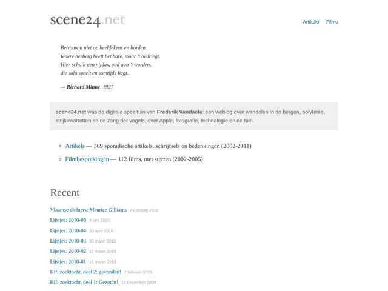
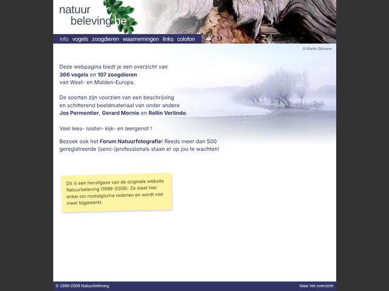
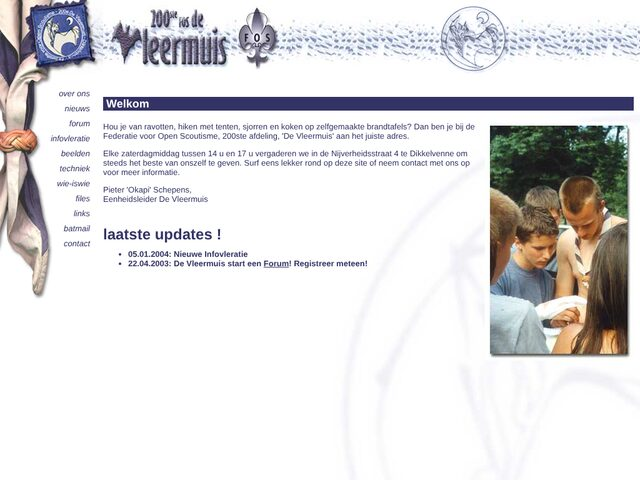
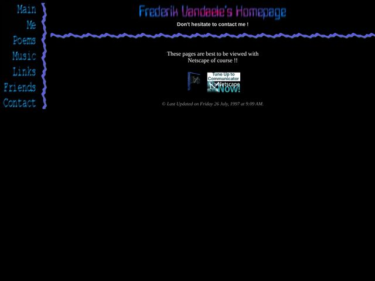
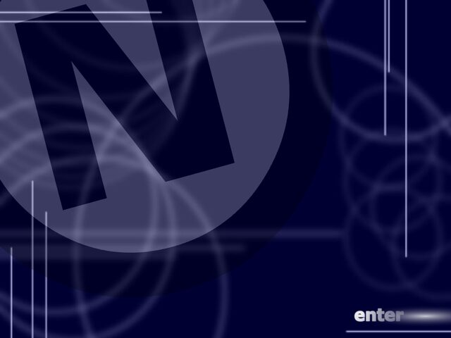
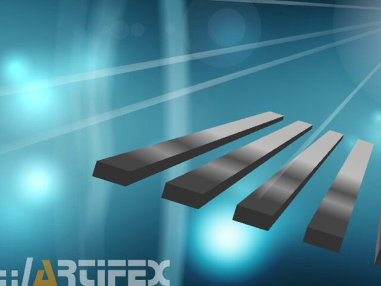
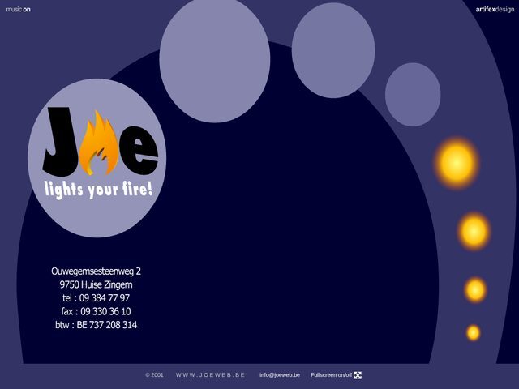
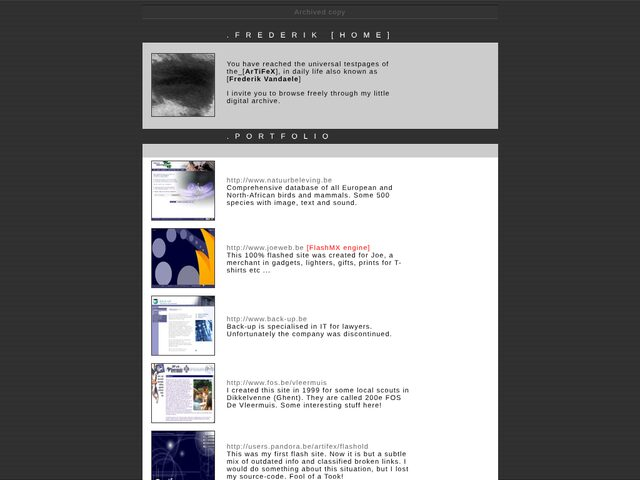
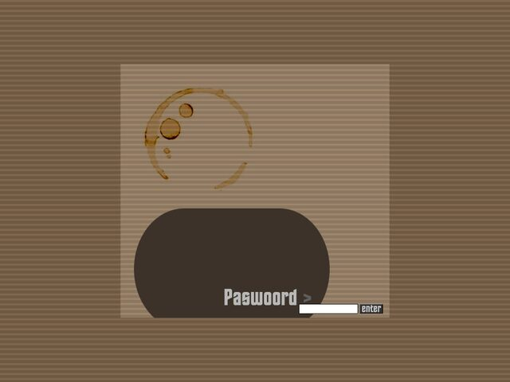

Flashbacks
Oude websites van 1997 tot 2011, zo goed mogelijk bewaard zoals ze toen waren.
Links naar andere websites gaan waar mogelijk naar het Internet Archive, naar een versie van rond dezelfde tijd. Niet alles werd daar bewaard, dus sommige links of afbeeldingen werken niet meer.
-

2002–2011 scene24.net Weblog over wandelen in de bergen, muziek, vogels, Apple, fotografie en de tuin. 369 artikels en 112 filmbesprekingen. -

1999–2003 Natuurbeleving 367 vogels en 108 zoogdieren van West-Europa, met foto, beschrijving en aantallen. Heruitgave met de layout van 2008. -

2002–2004 200e FOS De Vleermuis Site van de scoutsgroep uit Dikkelvenne, met infovleraties, knopen en sjorringen, wie-is-wie en downloads.
Homepages en experimenten
-

1997 Homepage 1997 De allereerste homepage, gemaakt met Netscape Composer. -

1999–2000 Nietzsche aka Artifex Flash Persoonlijke Flash-homepage met intro. -

ca. 2001 3dexperiment Flash 3D-experiment met een muzieklus. -

2001 JOE – lights your fire! Flash Site voor een groothandel in aanstekers en gadgets. -

2002 Homepage 2002 Portfolio, experimenten, foto's en cv. -

2002 For Edmond's Sake Flash Uitnodiging voor een fifties-feest. Paswoord:1977.